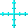

This sprite is permanently hidden. You may decide to unhide it for debugging purposes.

when clickeddeleteallofmouse xdeleteallofmouse yforeverwait untilmouse down?addmouse xtomouse xaddmouse ytomouse ywait untilnotmouse down?addmouse xtomouse xaddmouse ytomouse ywhen I receiveclear tunnelgo to x:0y:0go to frontwhenup arrowkey pressedifnotthenup<0changeupbywait untilnotkeyup arrowpressed?changeupbytimerwhenleft arrowkey pressedifnotthenleft<0changeleftbywait untilnotkeyleft arrowpressed?changeleftbytimerwhenright arrowkey pressedifnotthenright<0changerightbywait untilnotkeyright arrowpressed?changerightbytimerwhendown arrowkey pressedifnotthendown<0changedownbywait untilnotkeydown arrowpressed?changedownbytimerwhen I receivesteeringuser controlsdefineuser controlsdurationleftrightupdownchangeleftbychangerightbychangeupbychangedownbysample mouse movementifthenstate=4steer x roll off bydurationbut stop atsteer y roll off bydurationbut stop atchangeship direction xbychangeship direction ybychangeship position xbychangeship position ybydefinesteer ysteerroll off byroll offbut stop atstopifthensteer=0iftheny position<stopchange y byiftheny position>stopset y tostopelsechange y byiftheny position<stopset y tostopelsechange y bysteerif>then100set y todefinesteer xsteerroll off byroll offbut stop atstopifthensteer=0ifthenx position<stopchange x byifthenx position>stopset x tostopelsechange x byifthenx position<stopset x tostopelsechange x bysteerif>then100set x todefinesample mouse movementif>then0if>then1setmouse move xtosetmouse move ytodelete1ofmouse xdelete1ofmouse ydelete1ofmouse xdelete1ofmouse yelsecontinue mouse downmouse xmouse yelsesetmouse move xto0setmouse move yto0definecontinue mouse downxysetmouse move xtosetmouse move ytoreplace item1ofmouse xwithxreplace item1ofmouse ywithy